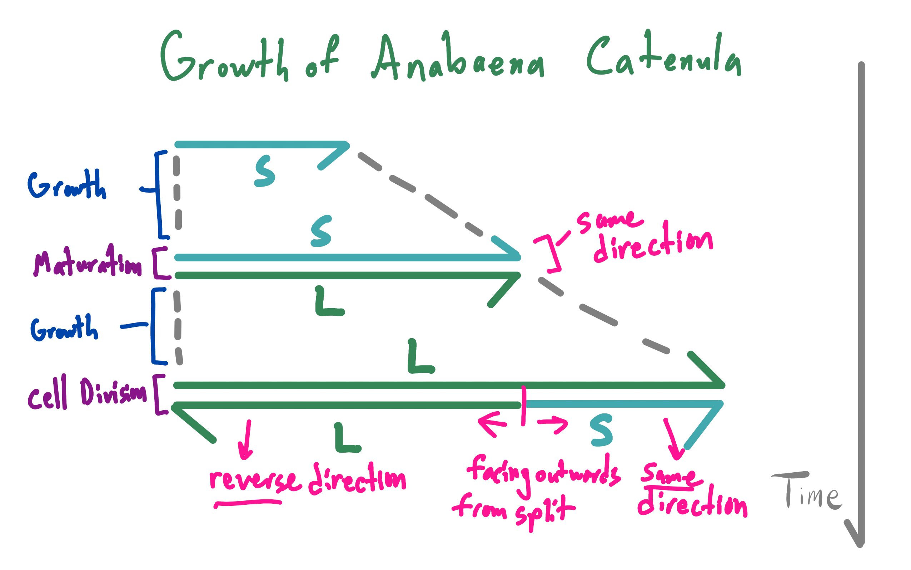

Move the mouse (desktop) or touch and drag the canvas (mobile) to move the bacteria around. The "show cell orientation" checkbox turns on arrows to help illustrate the math described below.
This sketch is a combination of the animation technique used in the Worm sketch, but also uses an L-system to simulate bacterial growth.
The L-system I'm using is based on the ones found in Sections 1.2 and 6.2.1 of The Algorithmic Beauty of Plants by Prezemyslaw Prusinkiewicz and Aristid Lindenmayer. Here's how I would summarize the rules:
The substitution rules can be written more formally as the following L-system. Notice that you need 4 rules instead of 2 to handle the orientation of the cells.
$$ \newcommand{\la}[1]{\overset{\leftarrow}{#1}} \newcommand{\ra}[1]{\overset{\rightarrow}{#1}} \begin{align} \text{start} &= \ra{S} \\ \ra{S} &\to \ra{L} \\ \la{S} &\to \la{L} \\ \ra{L} &\to \la{L}\ra{S} \\ \la{L} &\to \la{S}\ra{L} \\ \end{align}$$
One interesting detail about this L-system is the overall growth pattern follows the Fibonacci sequence. For example, let's look at the lengths of the first several iterations:
| Cells | Length |
|---|---|
| \(\ra{S}\) (start) | 1 |
| \(\ra{L}\) | 1 |
| \(\la{L}\ra{S}\) | 2 |
| \( \la{S}\ra{L} \ra{L} \) | 3 |
| \( \la{L} \la{L}\ra{S} \la{L}\ra{S} \) | 5 |
| \( \la{S}\ra{L} \la{S}\ra{L} \ra{L} \la{S}\ra{L} \ra{L} \) | 8 |
Huh, while writing the above, I just noticed another pattern: In any given iteration, all the L cells face the same way. Likewise, all the S cells face the same way. However, the L cells and S cells face in opposite directions.